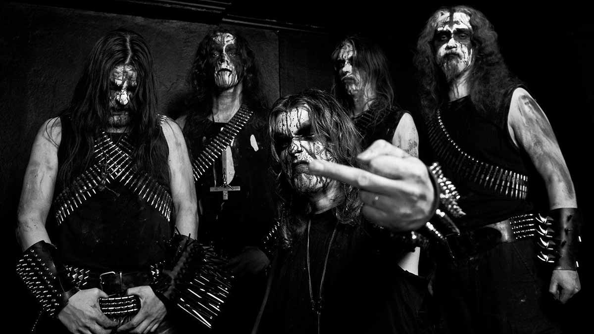
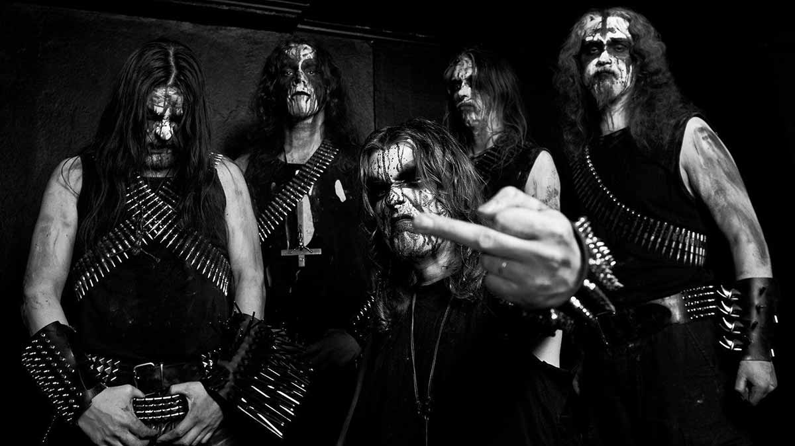

|  |
El black metal es un subgénero extremo del heavy metal, surgido a mediados de los años ochenta. Se caracteriza por sus letras con tintes satánicos. Nace como expresión musical de los movimientos anticristianos que proliferan alrededor del continente europeo, cuyo mayor impulso fue a través de la quema de numerosas iglesias cristianas.
|  |